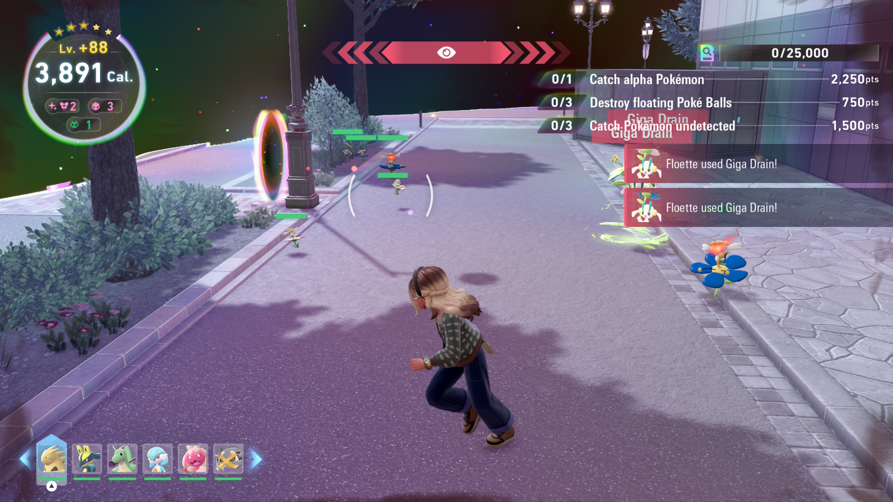
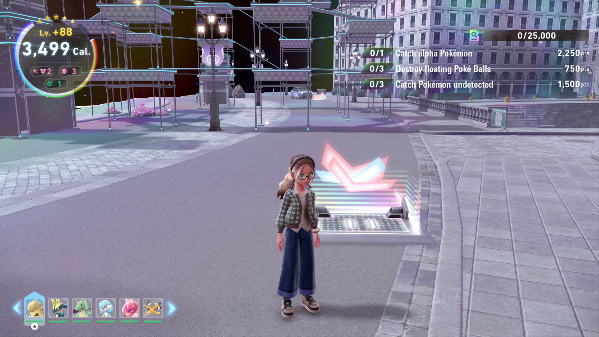
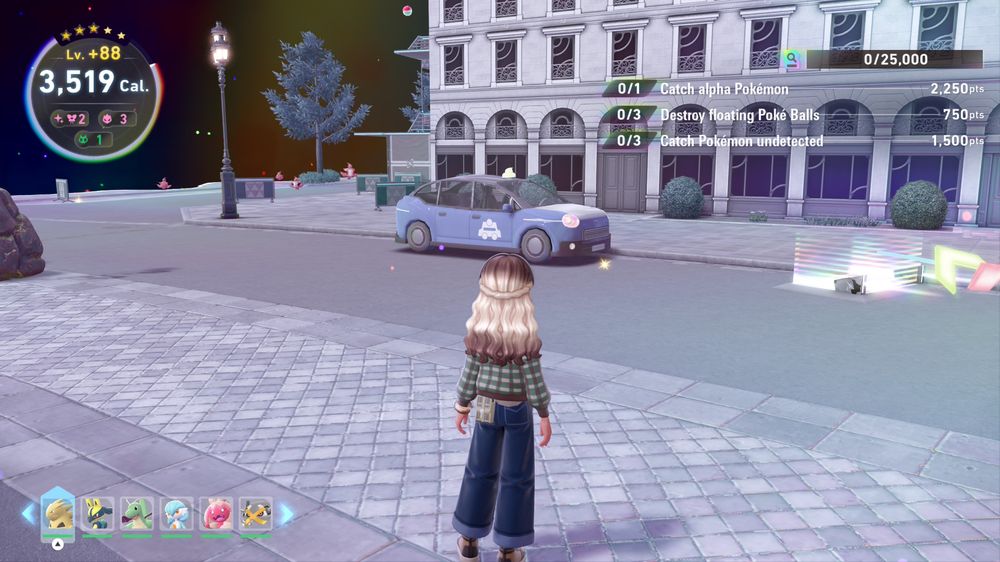

Legends ZA Shiny Hunting Guide
by Ari
DM me on discord if you find any mistakes @arino.m
by Ari
DM me on discord if you find any mistakes @arino.m
Viewing this website on a mobile device may cause certain formatting errors or overlapping text. For the optimal viewing experience, view this website on a desktop or laptop in a narrow window.
| Conditions | Shiny Rolls | Shiny Odds | |
| Base Odds | 1 | 1/4096 | |
| Sparkling Power 1 | 2 | 1/2048.25 | |
| Sparkling Power 2 | 3 | 1/1365.67 | |
| Sparkling Power 3 | 4 | 1/1024.38 | |
| Shiny Charm | 4 | 1/1024.38 | |
| Sparkling Power 1 | Shiny Charm | 5 | 1/819.60 |
| Sparkling Power 2 | Shiny Charm | 6 | 1/683.08 |
| Sparkling Power 3 | Shiny Charm | 7 | 1/585.57 |
| Lumiose City | Alpha Odds |
| Wild Zone Encounter* | 5% |
| City Encounter - Special | 20% or 40%** |
| City Encounter - Normal | 0% |
| Hyperspace Lumiose | Alpha Odds |
| Base Odds | 1% |
| Alpha Power 1 | 11% |
| Alpha Power 2 | 21% |
| Alpha Power 3 | 51% |
If attempting to obtain the best odds for a Shiny Alpha (Shalpha) Pokemon, Sparkling Power 3, Alpha Power 3, and Shiny Charm will yield 1/1148.18 odds for standard Hyperspace spawn. These are the best odds for hunting Shalphas in Hyperspace Lumiose. If Shiny 3 and Alpha 3 are too difficult or time consuming for you, prioritize Alpha Power over Shiny Power if you have the Shiny charm as this generally gives higher odds than the reverse. Additionally Alpha Power 3 gives 2.43x odds of getting a shalpha as opposed to Alpha Power 2.
| No Shiny Charm | ||||
| Shiny Power | Base Alpha Odds | Alpha Power | ||
| Alpha Power 1 | Alpha Power 2 | Alpha Power 3 | ||
| None | 1/409600 | 1/37236 | 1/19505 | 1/8031.37 |
| Shiny 1 | 1/204825 | 1/18620 | 1/9753.57 | 1/4016.18 |
| Shiny 2 | 1/136567 | 1/12415 | 1/6503.17 | 1/2677.78 |
| Shiny 3 | 1/102438 | 1/9312.50 | 1/4877.98 | 1/2008.58 |
| Shiny Charm | ||||
| Shiny Power | Base Alpha Odds | Alpha Power | ||
| Alpha Power 1 | Alpha Power 2 | Alpha Power 3 | ||
| None | 1/102438 | 1/9312.50 | 1/4877.98 | 1/2008.58 |
| Shiny 1 | 1/81960 | 1/7450.91 | 1/3902.86 | 1/1607.06 |
| Shiny 2 | 1/68308 | 1/6209.85 | 1/3252.78 | 1/1339.38 |
| Shiny 3 | 1/58557 | 1/5323.38 | 1/2788.44 | 1/1148.18 |
Your game will store up to 10 shinies across Lumiose City that have previously spawned in. These shinies can be left and revisited at any time to catch. Any additional shinies that spawn in past 10 will cause the oldest shiny to despawn. If a shiny is KOed or runs away, it will NOT respawn.
The spawn radius of Pokemon is 50 meters. This means that spawn locations that are within 50 meters will always have their respective Pokemon unless it has been recently KOed. The despawn radius of Pokemon is 70 meters. This allows for Pokemon that have already been spawned in to stay given that you are not more than 70 meters away. Using a Pin is the best way to measure distances and can be used as a guide when resetting spawns.

Hyperspace Lumiose is the dimension that the player can access from the DLC. This area has different spawn mechanics than the overworld, however, these spawns generally follow certain patterns. Looking at these patterns is usful in optimizing shiny hunts.

This image shows a Hyperspace wild zone where Flabebe and Floette cannot be reset via fly resets. Alpha Flabebe or Floette will engage the player and prevent them from flying.


These images show a group of Spritzee and Aromatisse that can be hunted via a horizontal holovator. The holovator brings the player into the spawn radius of the Pokemon then out of the despawn radius causing the group to spawn and despawn over and over. These resets are very fast and, if done optimally, can cause your calorie count to barely go down every reset.